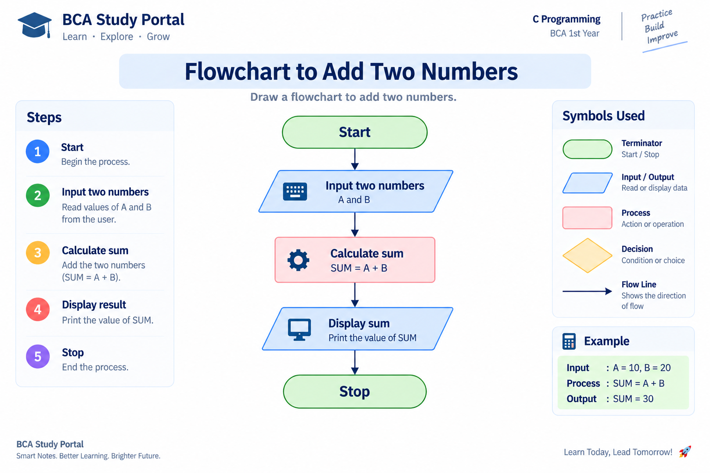
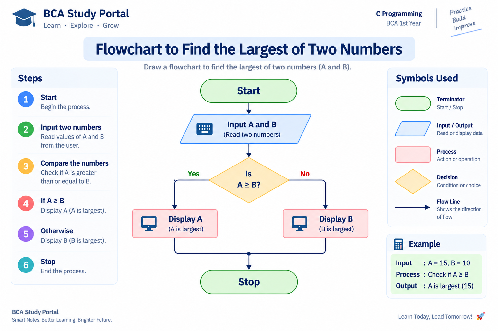
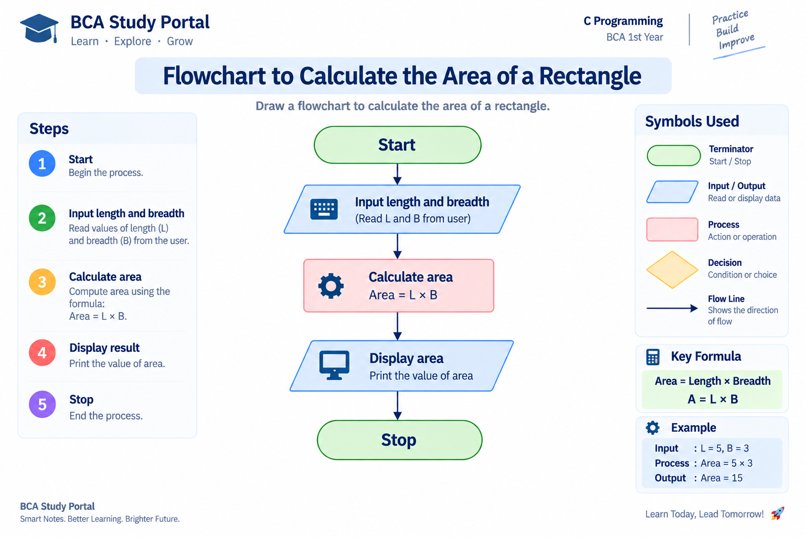
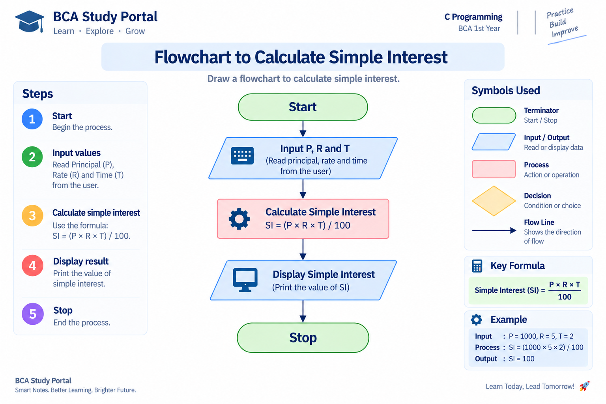
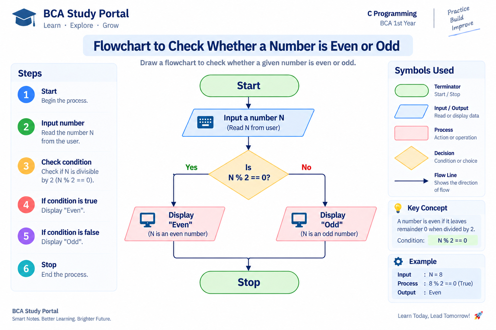
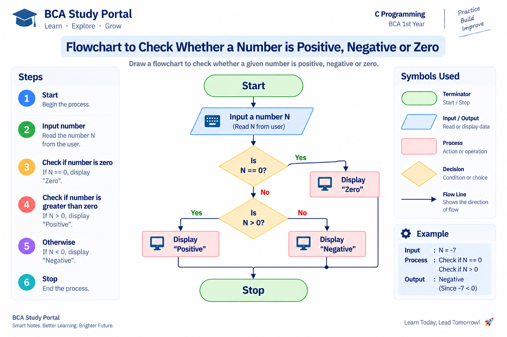
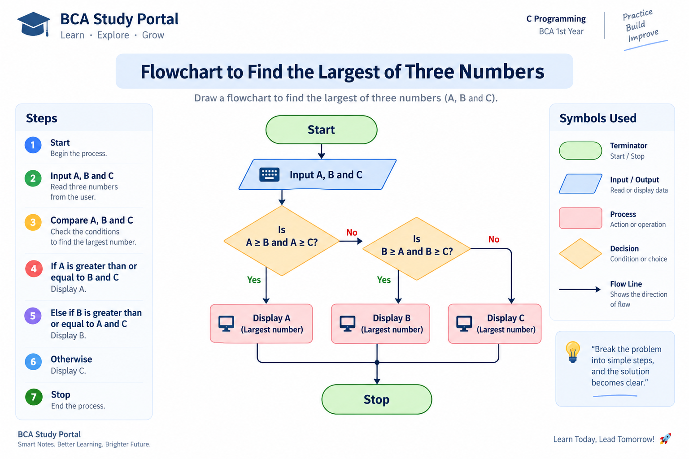
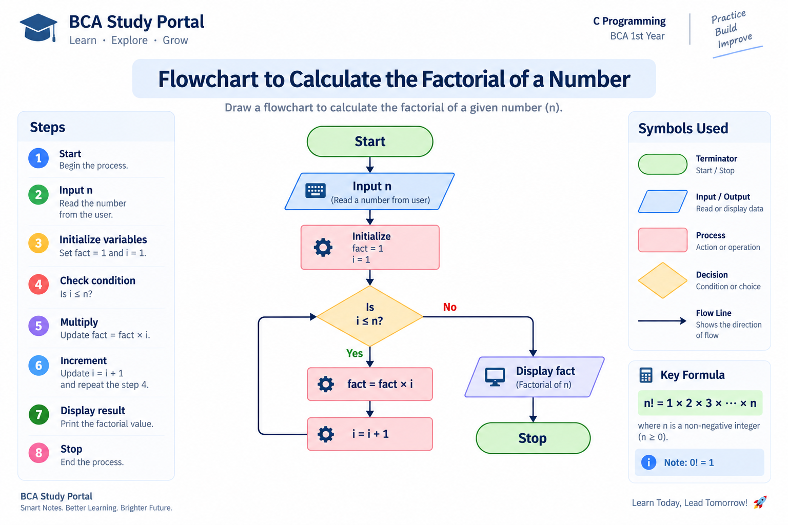
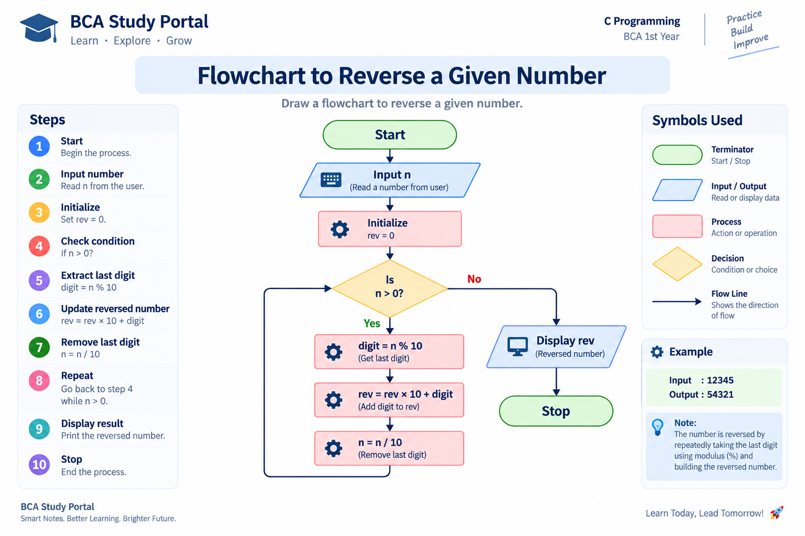
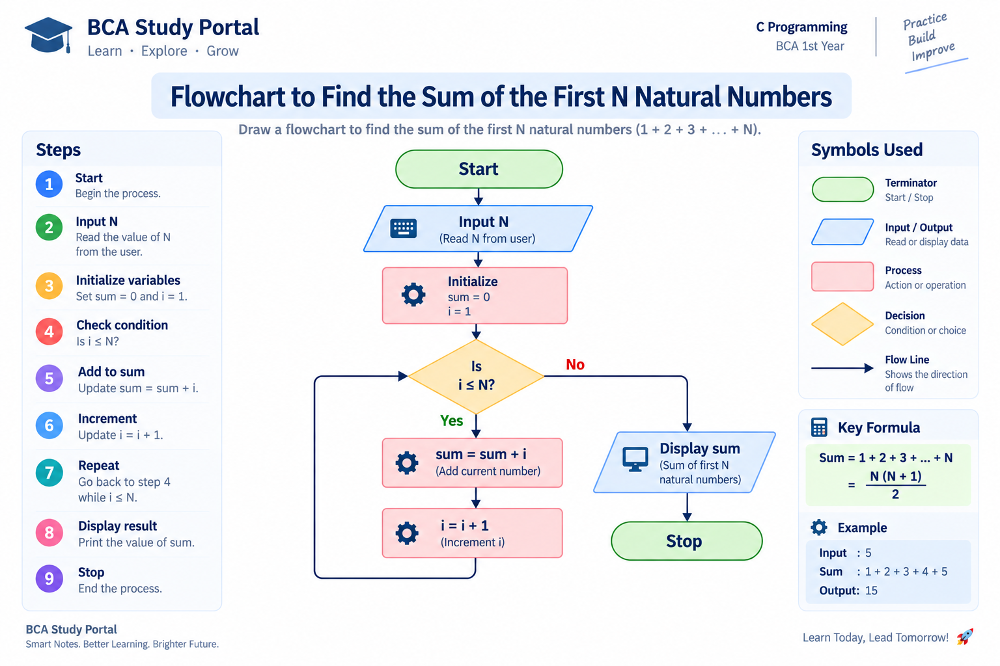

Draw a flowchart to add two numbers.

The flowchart starts by taking two numbers as input, adds them, displays the sum, and then stops.
Draw a flowchart to find the largest of two numbers.

The flowchart accepts two numbers, compares them, and displays the greater number.
Draw a flowchart to calculate the area of a rectangle.

The flowchart takes the length and width as input, calculates the area using length × width, displays the result, and stops.
Draw a flowchart to calculate simple interest.

The flowchart accepts the principal amount, rate and time, applies the simple interest formula, displays the result, and stops.
Draw a flowchart to check whether a number is even or odd.

The flowchart divides the number by 2 and checks the remainder. A remainder of 0 indicates an even number; otherwise the number is odd.
Draw a flowchart to check whether a number is positive, negative, or zero.

The flowchart compares the input number with zero and determines whether it is positive, negative, or zero.
Draw a flowchart to find the largest of three numbers.

The flowchart compares the three input values and determines which one is the largest.
Draw a flowchart to calculate the factorial of a number.

The flowchart initializes the factorial value, repeatedly multiplies it by the numbers from 1 to N, and displays the result.
Draw a flowchart to reverse a given number.

The flowchart repeatedly extracts the last digit of the number and constructs the reversed number until the original number becomes zero.
Draw a flowchart to find the sum of the first N natural numbers.

The flowchart starts with SUM = 0 and repeatedly adds the natural numbers from 1 to N. The final sum is then displayed.